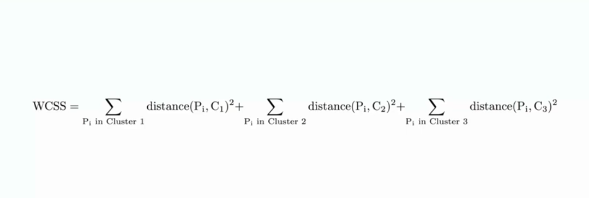
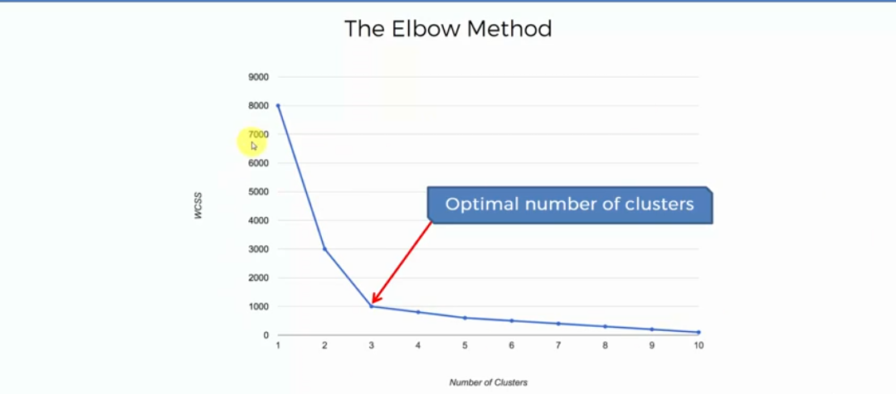

Ankit MishraMachine Learning Engineer Welcome Readers! |
So, Here I am going to explain how to choose right Number of clusters in k-means algorithm .
I will also talk about Elbow method and WCSS. Send me your Feedback to robankit777@gmail.com. Lets start.
So, here we have got a data science problem.
We have got two variables .
I have taken only two variables just for understanding and simplicity.
So,if i have to choose the number of cluster just by seeing the graph.
I will defenetly choose 3.
and it will looks like this
Now, In order to understand whether our algorithm will take 2 clusters or 10, we use WCSS formula and graph.
Now, at first glance both name and formula of WCSS look a bit complex, but in reality it is super simple. WCSS stands on
It will looks like this,
And Now we can find WCSS for One cluster by Formula.
Ok so finally we are at a point where we will know How our algorithm decide or choose number of Cluster
This is a decreasing WCSS graph for dataset or datascience problem.
this visual chart represent how WCSS changes as we increase the number of cluster.
WCSS starts at quite a large Number. Now look at graph and how it changes
it decreases from 8k to 3k just when we choosen 2 cluster thats massive.
Later it jumps from 3k to 1k when 3 clusters choosen ,again a large drop,
Now after that it goes from 1k to 800 then 700 and so on. As we can see first
two changes created a huge drop in WCSS. And after that WCSS not drops at that rate(becomes linear approx)
This is our hint to select optimal number of cluster.
look for an Elbow in the graph and the bend point as shown in
graph is optimal number of clusters.